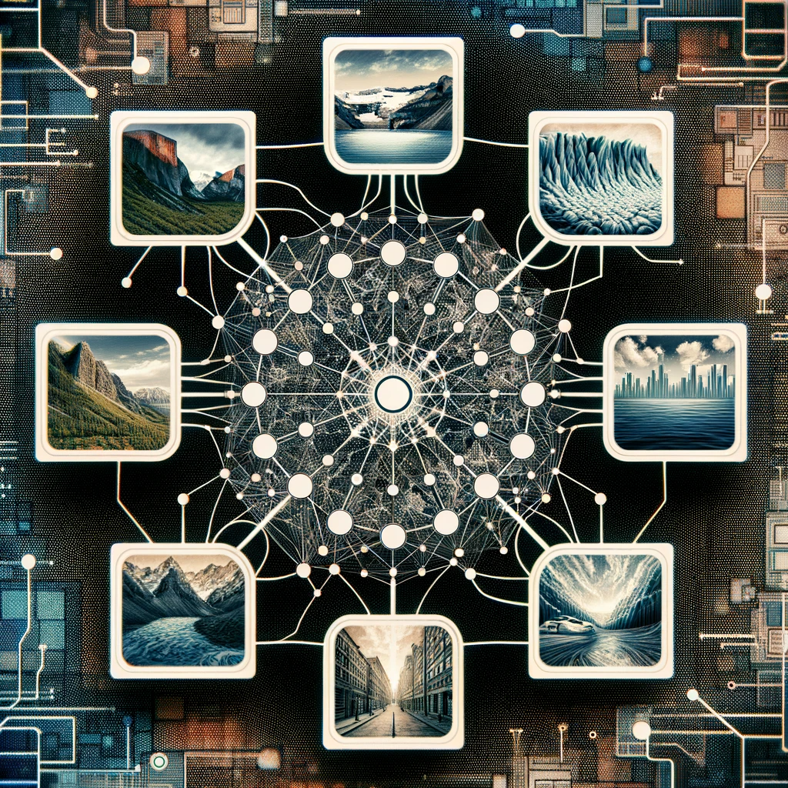
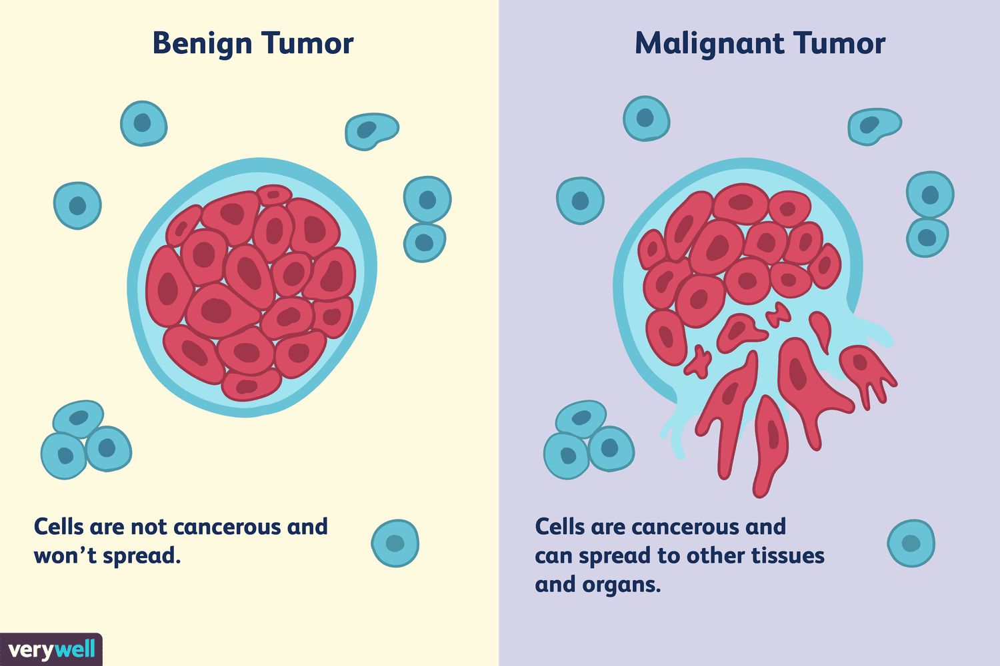
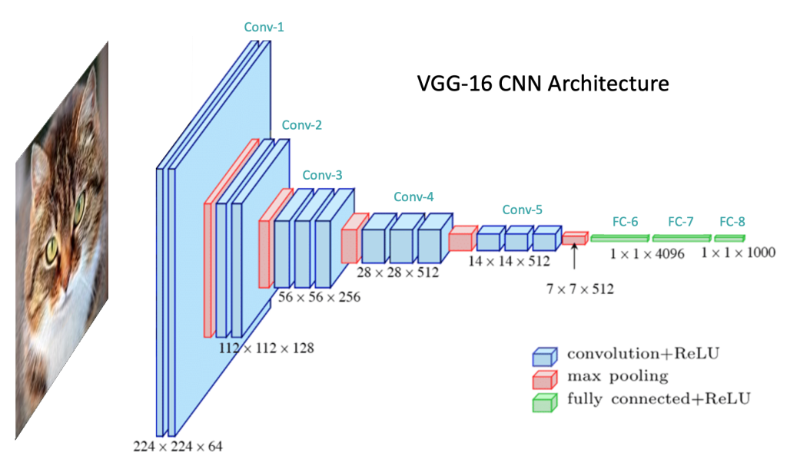
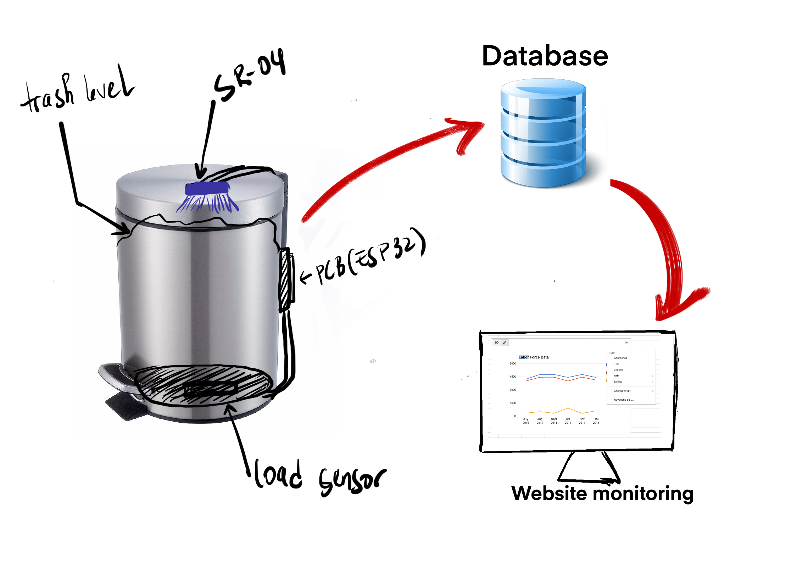
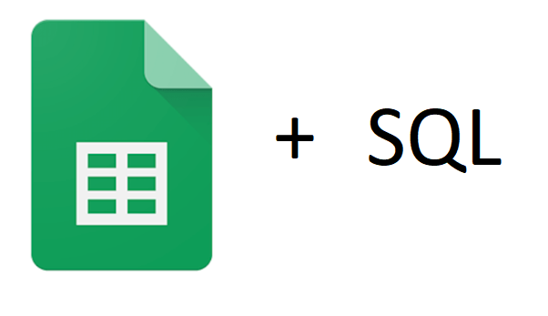

Currently pursuing a Master's in Data Analysis and Information Systems, building on a Bachelor's in Computer Engineering from Shepherd University,
my journey in data science is fueled by a passion for problem-solving and leveraging technology to improve everyday tasks.
I am drawn to the challenge of analyzing complex data to extract meaningful insights, a skill I look forward to applying as a Data Scientist.
My academic and professional experiences have honed my ability to interpret data narratives, preparing me to contribute effectively in various industries.
As I strive to become a Data Scientist, I am eager to explore opportunities in diverse sectors.
I aim to apply my analytical skills in data-rich environments, supporting data-driven decisions and innovative problem-solving across any industry.
Recent Work

Facial Emotion Detection
This project leverages deep learning to analyze and interpret real-time facial emotions from 48x48 pixel grayscale images. It features a custom-built CNN and VGG16 model for emotion detection, catering to dynamic content adaptation based on the user's emotional state.
This innovative approach finds potential applications in enhancing user experience across various digital platforms.

Intel Image Classifier with CNN
Developed an image classification system using Convolutional Neural Networks (CNN) to categorize images into six classes: mountain, street, glacier, buildings, sea, and forest. Trained on a dataset of 25,000 150x150 images, the model achieved 80% accuracy.
The project showcases expertise in deep learning, data preprocessing, and model evaluation.

Cancer Type Detector App
Developed a cancer type detection model that uses machine learning algorithms to classify cancer as malignant or benign based on input features. Trained and optimized the model using a dataset with over 500 rows and 30 features, achieving an accuracy of 97%.
Built a web application using Flask to provide a user-friendly interface for making predictions

Basic Image Classifier
This project involved building a basic Convolutional Neural Network (CNN) using TensorFlow and Keras to classify images from the CIFAR-10 dataset. The model achieved an accuracy of approximately 70% on the test dataset,
displaying potential for further optimization and exploration. The project serves as a foundational exercise in image classification with CNNs, offering insights for future advancements and complex dataset exploration.

E-Commerce Customer Churn Predictor
Analyzed customer data from Telo comapny, built three Machine Learning models to predict customer churn and companred their performance based on their accuracy score.
The Logistic regression model had the highest score of 79.67%

Healthcare Employee Attrition prediction
Analyzed Heathcare employee data and built a Machine learning model to predict employee attrition.
Built the model using the logistic regression algorithm. The model had an accuracy score of 88.78%

Spotify Music EDA
Explored music data from Spotify in order to run some data analysis. Found useful insights answering a few questions
such as whether or not the loudness of the music has a positive impact on the energy from the music.

Supplements Exploratory Data Analysis(EDA)
Analized bodybuilding.com supplements in order to find out the effect of the product flavor on overall customer's rating.
Found out whether or not the product pricing has a negative impact on the product rating.

Smart Recycle Bin - Waste Management Solution
A pioneering project in the realm of environmental sustainability, the Smart Recycle Bin employs an ESP32 microcontroller combined with
sophisticated sensing technology to monitor recycling and trash bins. This system provides real-time data visualization using Highcharts,
ensuring efficient waste management and contributing to a greener future.

Data Visualization in Tableau
Find all my Data visualization projects by clicking the button 'view project' below

Projects Data
Find some of the data used for my projects (Raw data as well as clean version of the data(Cleaned in Sql and Excel))